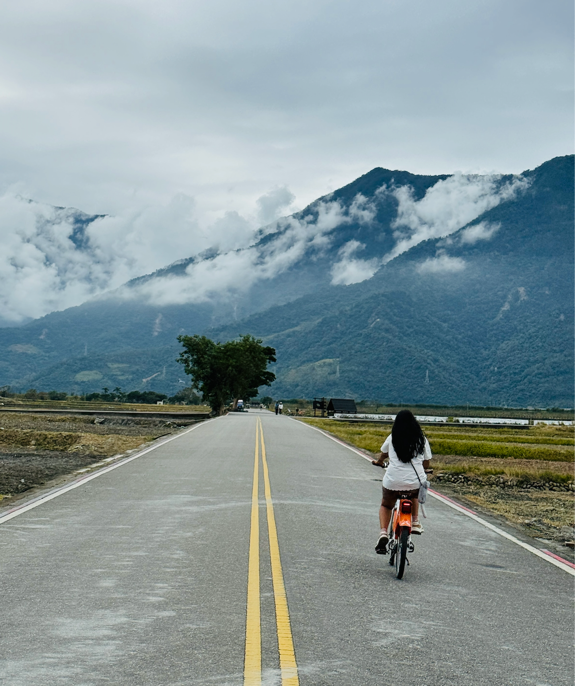
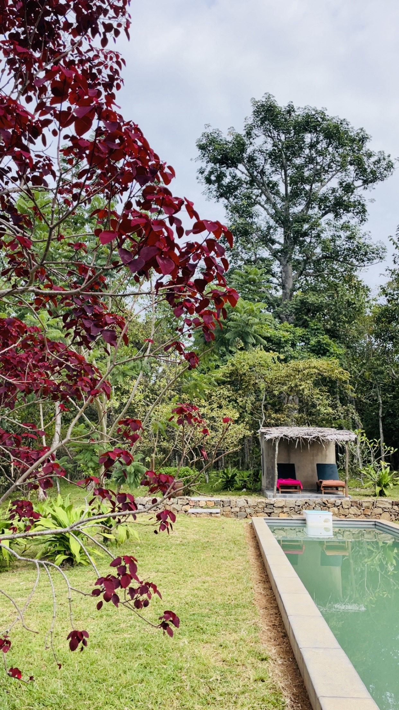
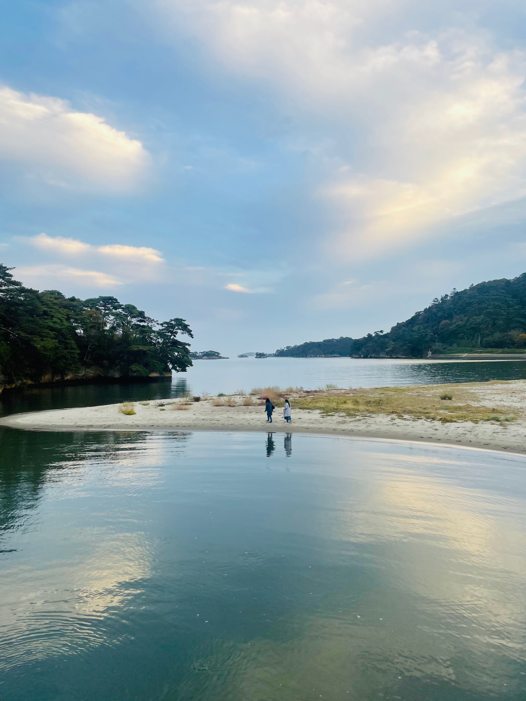
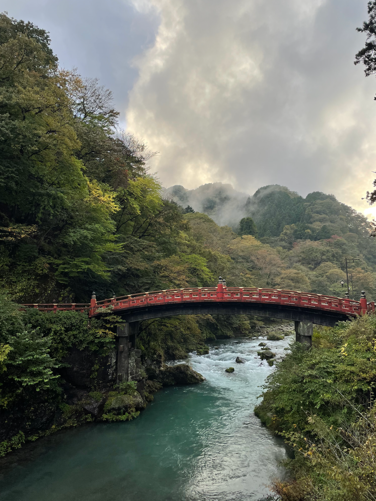

One of the easiest mistakes to make while travelling is believing that seeing more automatically means experiencing more.
We've certainly been guilty of it. A carefully researched itinerary. A list of attractions. A map filled with saved locations. A schedule carefully designed to make the most of every hour. On paper, it sounds perfect. In reality, it often leaves you rushing from place to place, constantly thinking about what's next instead of appreciating where you are.
At some point, we began to question whether that was really how we wanted to travel.


A road we decided to follow, and a café that was never on any list.
These days, we still research destinations obsessively. We still save locations, read travel guides, and build rough plans. The difference is that we've become much more comfortable leaving space for the unexpected. In fact, some of our favourite travel memories exist because something didn't go according to plan. A road that looked interesting so we decided to follow it. A café that wasn't on any recommendation list. A slow morning that turned into the highlight of the day. A viewpoint we discovered simply because we weren't in a hurry.
Those moments rarely fit neatly into an itinerary. And that's exactly what makes them memorable.
One thing we've noticed over the years is that the places we remember most are often not the places themselves but the experiences we had there. The way the weather changed during a hike. The conversations we had during a train journey. The feeling of driving through unfamiliar roads with no urgency to get anywhere.
"The route becomes part of the destination. Perhaps that's why the name Routes & Reflections feels so fitting."
The route matters. Not because it's the fastest path between two points, but because it's where so many of the best moments happen.
We've also learned that travelling slowly doesn't necessarily mean spending weeks in a destination. Sometimes it simply means paying attention. Staying a little longer when something feels special. Taking the longer road. Putting the camera down after taking the photograph. Sitting down instead of rushing off to the next attraction. Giving a place the opportunity to reveal itself. Because no matter how much research you do, the best parts of travel are often the things you couldn't possibly plan for.


The moments that never made it onto any itinerary.
Years from now, we probably won't remember every attraction we visited. We'll remember a quiet morning. A scenic road. A meal we never expected to enjoy so much. A conversation. A feeling. A moment that seemed insignificant at the time but somehow stayed with us.
That's the kind of travel we want more of. Not travelling to complete a destination. Travelling to experience one.
Because a great trip shouldn't leave you with a completed checklist. It should leave you with stories you find yourself returning to long after the journey is over.